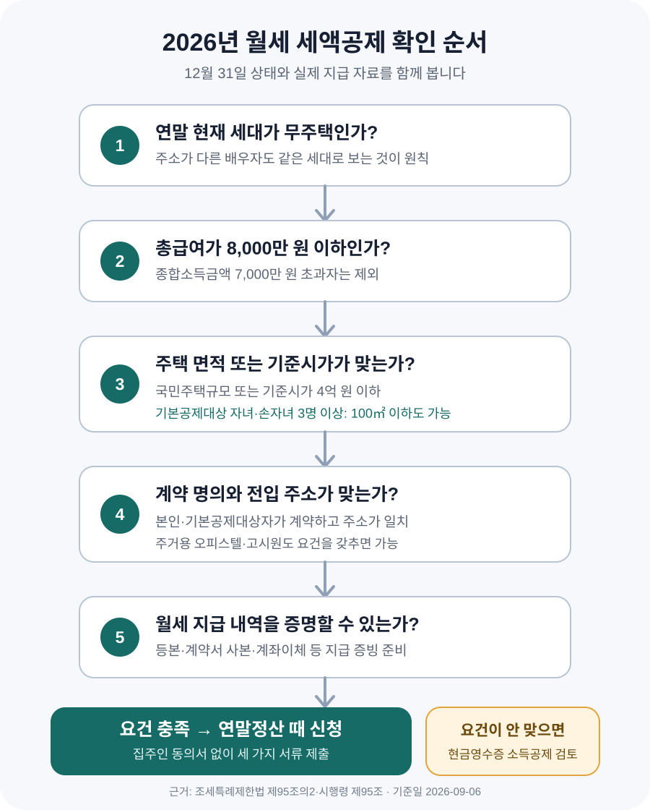

월세 세액공제, 집주인 동의 없이 받을 수 있을까?
월세 세액공제를 신청하는 데 집주인의 별도 동의서는 필요하지 않습니다. 다만 월세를 냈다고 누구나 공제받는 것은 아닙니다. 연말 기준 무주택 여부, 총급여, 임차한 집의 규모 또는 기준시가, 전입 주소, 계약자 명의와 지급 증빙을 모두 확인해야 합니다. 요건을 충족하면 2026년 현재 연간 월세 1,000만 원까지 15% 또는 17%를 산출세액에서 공제합니다.
집주인에게 허락받지 않아도 신청할 수 있습니다
세입자들이 가장 먼저 묻는 질문은 “집주인이 싫어하면 어떡하나요?”입니다. 현행 조세특례제한법 제95조의2와 같은 법 시행령 제95조의 공제 요건에는 임대인의 동의가 들어 있지 않습니다. 국세청이 안내하는 제출서류도 주민등록표등본, 임대차계약서 사본, 월세 지급 증빙 세 가지입니다.
따라서 회사의 연말정산 담당자에게 서류를 낼 때 집주인의 서명이나 동의서를 따로 받을 필요는 없습니다. 계약서에 “월세 세액공제를 신청하지 않는다”는 문구가 있더라도 그 문구만으로 세법상 공제 요건이 사라지는 것은 아닙니다. 다만 신청 사실과 임대소득 자료가 국세청에서 함께 확인될 수 있어 집주인과 마찰이 생기는 경우는 있습니다. 세금 신고 문제와 임대차 관계를 섞지 말고, 본인이 법에서 정한 요건을 갖췄는지부터 확인하는 편이 안전합니다.
내가 공제 대상인지 이렇게 확인하세요
월세 세액공제는 과세기간이 끝나는 날, 보통 12월 31일의 상태를 기준으로 판단합니다. 올해 중간에 집을 샀거나 세대원이 주택을 보유하고 있다면 “월세로 살았던 기간이 있으니 된다”고 단정해서는 안 됩니다. 배우자는 주소가 달라도 같은 세대로 보는 것이 원칙입니다.
| 확인할 항목 | 2026년 기준 | 주의할 점 |
|---|---|---|
| 소득 | 총급여 8,000만 원 이하 | 종합소득금액이 7,000만 원을 넘으면 제외 |
| 주택 보유 | 과세기간 종료일 현재 세대가 무주택 | 주소가 다른 배우자도 원칙적으로 같은 세대 |
| 신청자 | 근로소득이 있는 세대주 또는 일정한 세대원 | 세대주가 주택 관련 공제를 받았다면 세대원 공제가 제한될 수 있음 |
| 계약 명의 | 본인 또는 기본공제대상자가 계약 | 계약자와 실제 지급자가 다르면 부담 사실을 설명할 자료가 필요할 수 있음 |
| 전입 | 계약서 주소와 주민등록표등본 주소가 같음 | 전입 전 지급분은 그대로 인정된다고 단정하기 어려움 |
2026년부터는 부부가 실제로 떨어져 사는 경우에 관한 예외도 생겼습니다. 세대주가 공제를 받은 뒤 배우자도 모든 공제 요건을 충족하고, 두 사람의 주소지가 서로 다른 시·군·자치구에 있으며, 배우자와 함께 사는 일정한 가족도 무주택인 경우 배우자가 추가로 공제받을 수 있습니다. 다만 부부의 공제대상 월세액을 합쳐 연 1,000만 원 한도를 적용합니다. 주말부부처럼 이 규정을 이용하려면 가족 구성과 주소 조건을 함께 보므로 국세상담센터 126이나 회사 담당자에게 사전에 확인하는 것이 좋습니다.
오피스텔과 고시원도 공제 대상이 될 수 있습니다
공제 대상은 아파트나 빌라에만 한정되지 않습니다. 주거용 오피스텔과 고시원도 법에서 정한 주택 요건을 갖추고 실제 주소를 일치시켜 거주했다면 대상이 될 수 있습니다. 일반적으로 국민주택규모의 주택이거나 기준시가 4억 원 이하이면 면적이 더 넓어도 검토할 수 있습니다.
2026년에는 기본공제대상 자녀와 손자녀가 3명 이상인 경우 면적 기준이 넓어졌습니다. 이 경우 전용면적 100㎡ 이하이거나 기준시가 4억 원 이하인 주택이면 됩니다. 자녀 수는 단순히 함께 사는 아이 수가 아니라 소득세법상 기본공제대상자에 해당하는지까지 확인해야 합니다.
기준시가 4억 원은 보증금이나 월세, 부동산 앱의 매매 호가를 말하는 것이 아닙니다. 공동주택은 공시가격 등 세법상 기준시가를 확인해야 합니다. 면적 요건 또는 가격 요건 가운데 하나를 충족하면 되므로, 전용면적이 기준을 넘는다고 바로 포기하지 말고 기준시가도 확인하세요.

월 70만 원을 냈다면 얼마나 줄어들까요?
월세 70만 원을 12개월 냈다면 연간 지급액은 840만 원입니다. 총급여가 5,500만 원 이하이고 종합소득금액이 4,500만 원 이하라면 공제율은 17%이므로 계산상 세액공제액은 142만 8,000원입니다. 총급여가 5,500만 원을 초과하고 8,000만 원 이하라면 공제율 15%를 적용해 126만 원입니다.
월세를 연 1,200만 원 냈더라도 공제대상 금액은 1,000만 원까지만 잡습니다. 따라서 계산상 최대 공제액은 17% 구간 170만 원, 15% 구간 150만 원입니다. 다만 ‘공제액’이 통장으로 그대로 입금되는 금액이라고 생각하면 안 됩니다. 세액공제는 계산된 소득세에서 빼는 방식이므로, 이미 낸 세금과 다른 공제 내역에 따라 실제 환급액은 달라집니다.
보증금, 전세대출 이자, 계약서에서 월세와 구분한 관리비·전기료·수도료는 월세액에 그대로 더하지 않습니다. 특히 월세와 관리비를 한 번에 이체하고 있다면 계약서와 이체 메모에서 두 금액이 구분되는지 확인해 두세요.
연말정산 전에 세 가지 서류를 모아 두세요
국세청 월세액 세액공제 안내가 제시하는 서류는 다음과 같습니다.
- 주민등록표등본 — 계약서의 임차주택 주소와 실제 전입 주소가 같은지 확인합니다.
- 임대차계약서 사본 — 계약자, 임대인, 주소, 계약기간과 월세액을 확인합니다. 갱신했다면 변경 계약서도 챙깁니다.
- 월세 지급 증빙 — 계좌이체 영수증, 무통장입금증, 통장거래내역처럼 누구에게 얼마를 보냈는지 확인할 수 있는 자료입니다.
계좌이체 메모에는 “9월 월세”처럼 지급 월을 남기는 편이 좋습니다. 임대인과 계좌 명의자가 다르거나 가족이 대신 송금했다면 계약서만으로 실제 부담자를 확인하기 어려울 수 있으므로, 관계와 지급 경위를 입증할 자료를 따로 준비하세요. 현금으로 지급했다면 영수증이 없을 때 입증이 훨씬 어려워집니다.
이런 경우에는 한 번 더 확인해야 합니다
| 흔한 상황 | 확인할 내용 |
|---|---|
| 전입신고를 늦게 함 | 계약 주소와 주민등록 주소가 같았던 기간과 월세 지급일을 나눠 확인 |
| 부모 명의로 계약함 | 부모가 신청자의 기본공제대상자인지, 신청자가 실제 거주·지급했는지 확인 |
| 회사 기숙사비를 냄 | 본인이 주택을 임차해 낸 월세인지, 회사에 지급한 사용료인지 구분 |
| 연도 중 이사함 | 각 집의 계약서와 지급내역을 보관하고 주소가 일치한 기간을 구분 |
| 연말에 주택을 취득함 | 12월 31일 현재 세대의 무주택 요건을 충족하는지 확인 |
| 공제를 몇 년 놓침 | 해당 귀속연도의 법정신고기한과 경정청구 가능기간을 홈택스에서 확인 |
연말정산에서 빠뜨렸다면 다음 해 종합소득세 신고나 경정청구로 바로잡을 수 있는 경우가 있습니다. 국세기본법 제45조의2의 일반적인 경정청구 기간은 법정신고기한이 지난 뒤 5년 이내입니다. 귀속연도와 기존 신고 상태에 따라 시작일이 달라질 수 있으므로 “월세를 낸 날부터 무조건 5년”으로 계산하지 말고 홈택스에서 해당 연도의 경정청구 화면이 열리는지 확인하세요.
세액공제와 현금영수증 소득공제는 같이 받을 수 없습니다
월세 세액공제 요건을 충족하지 못하는 근로자는 주택임차료 현금영수증을 발급받아 신용카드 등 사용금액 소득공제를 검토할 수 있습니다. 국세청은 임대인이 사업자가 아니어도 임차인이 임대차계약서를 첨부해 홈택스나 손택스에서 주택임차료를 신고할 수 있도록 안내합니다. 최초 신고 뒤 계약기간에는 매월 별도로 다시 신고하지 않아도 되지만, 계약이 연장되거나 바뀌면 변경 내용을 신고해야 합니다.
두 제도는 계산 방식이 다릅니다. 세액공제는 산출세액에서 정해진 비율만큼 직접 빼고, 현금영수증 소득공제는 다른 카드·현금영수증 사용액과 합쳐 과세표준을 줄입니다. 현금영수증 공제율이 더 커 보이더라도 실제 절세액이 더 크다는 뜻은 아닙니다.
올해 월세를 냈다면 지금 확인하세요
- □ 12월 31일 현재 본인과 세대원이 주택을 소유하지 않는지 확인했다.
- □ 총급여와 종합소득금액이 공제 기준 안에 들어오는지 확인했다.
- □ 임차주택의 전용면적 또는 기준시가 요건을 확인했다.
- □ 임대차계약서 주소와 주민등록표등본 주소가 같다.
- □ 계약자가 본인 또는 기본공제대상자인지 확인했다.
- □ 계약기간 전체의 월세 이체내역을 내려받아 보관했다.
- □ 관리비와 월세가 계약서와 이체내역에서 구분된다.
- □ 월세 세액공제와 현금영수증 소득공제를 중복 신청하지 않는다.
- □ 주말부부·가족 대리송금처럼 예외가 있으면 126이나 회사 담당자에게 확인한다.
공식 자료 및 참고자료
- 국가법령정보센터 — 조세특례제한법 제95조의2(월세액에 대한 세액공제)
- 국가법령정보센터 — 조세특례제한법 시행령 제95조
- 국세청 — 월세액 세액공제 대상·공제율·구비서류
- 국세청 — 월세 세액공제와 현금영수증 공제 중복 불가
- 국세청 — 주택임차료 현금영수증 신고 방법
- 국가법령정보센터 — 국세기본법 제45조의2(경정 등의 청구)
정보 기준일: 2026-09-06. 이 글은 근로소득자의 일반적인 월세 세액공제를 설명한 정보이며 개별 세무 자문이 아닙니다. 공제 여부와 실제 환급액은 세대 구성, 다른 소득과 공제, 계약 및 지급 형태에 따라 달라질 수 있습니다. 신청 전 국세청 126, 홈택스 또는 회사 연말정산 담당자에게 본인 자료를 기준으로 확인하세요.
월세 계약 전에 같이 확인할 도구
- 전월세 전환 계산기보증금과 월세 조건을 같은 기준으로 비교
- 전월세 계약 체크리스트계약 전 권리관계부터 전입·확정일자까지 확인